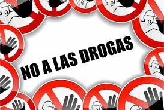
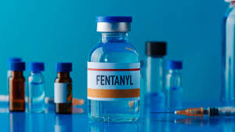
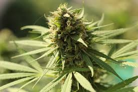
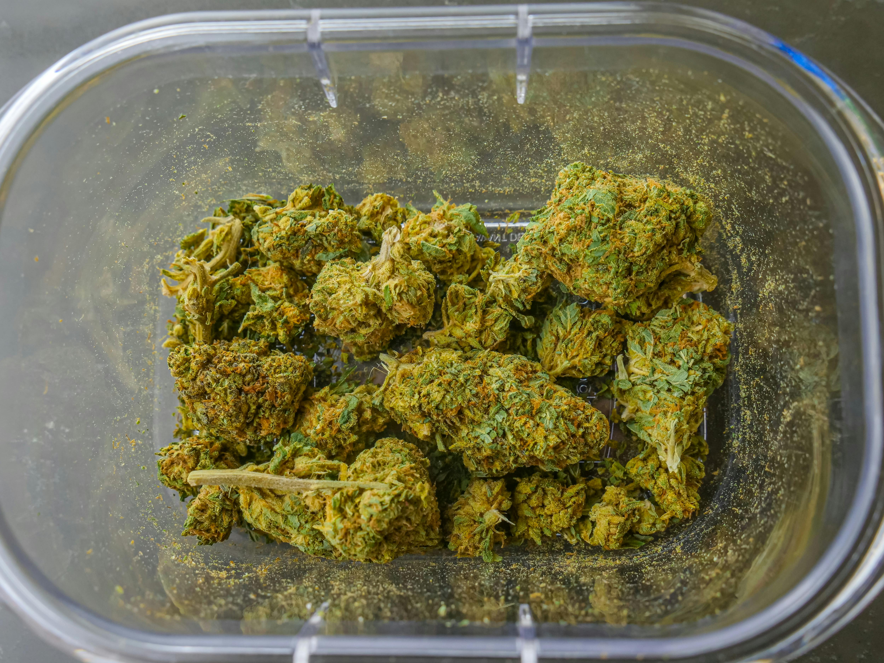
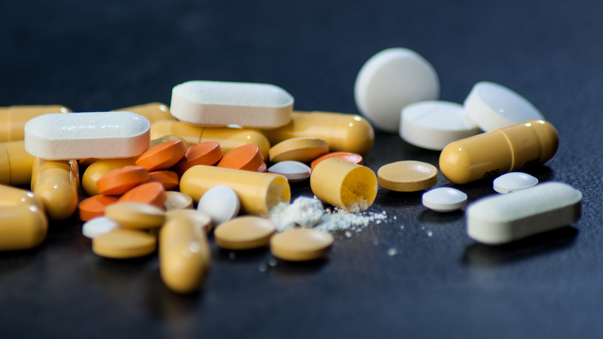
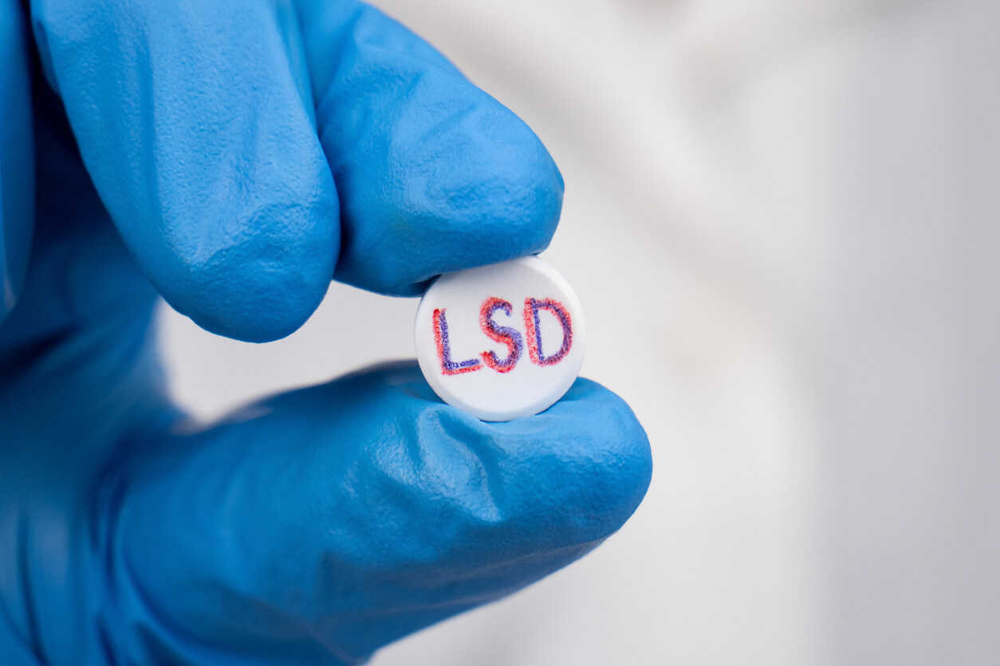
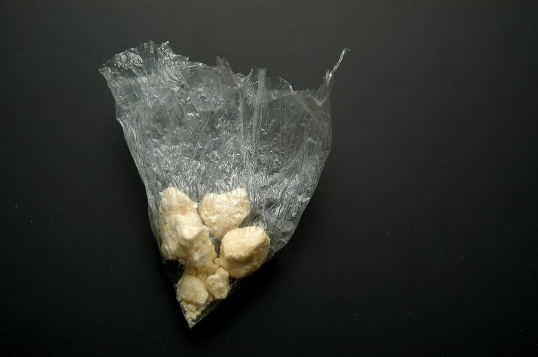
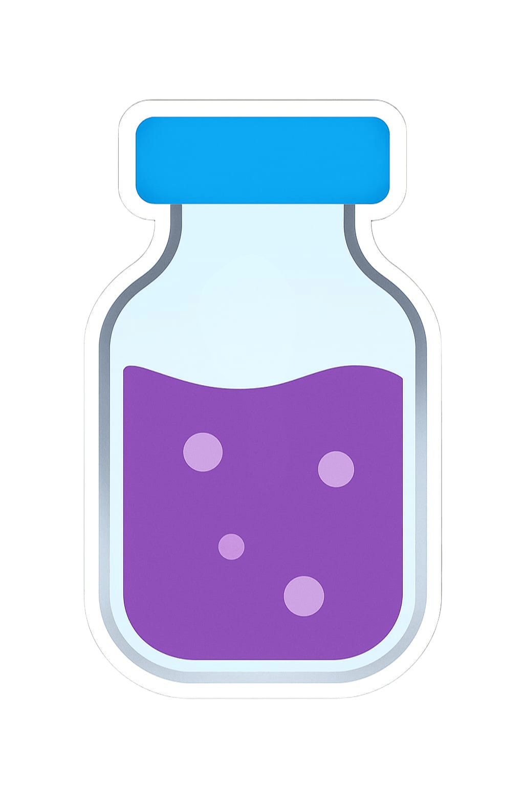
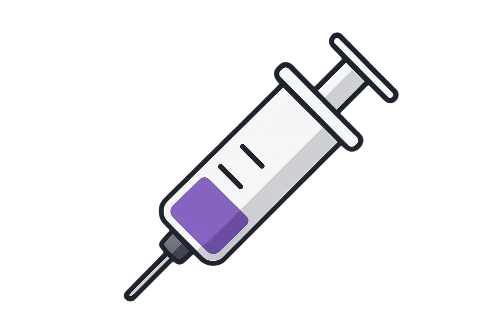

Zer0 X

Bienvenido a ZeroX
Nuestra aplicación web está diseñada con un propósito claro: informar, orientar y apoyar a quienes buscan conocer más sobre las drogas y sus efectos . En este espacio encontrarás información confiable y accesible sobre qué son las drogas, cómo afectan al cuerpo y la mente, y cuáles son las consecuencias de su consumo.
Además, contamos con una sección de contactos de ayuda, donde podrás acceder a instituciones y líneas de apoyo especializadas que brindan atención profesional, confidencial y gratuita.

Y si necesitas resolver alguna duda de forma directa, nuestro chat interactivo te permitirá hacer preguntas y recibir respuestas personalizadas en un entorno seguro y respetuoso. Informarte es cuidarte. Nuestra misión es ofrecerte un espacio digital donde la información y la orientación se unan para promover el bienestar y la toma de decisiones conscientes.
Pregunta cualquier cosa sobre drogas y prevención:
Impacto de la adicción en Perú
Testimonio de Alex
Experiencias de adolescentes
Situación de drogas en adolescentes
Patronato de Santa Ana
Situaciones comunes
Tasha B. experiencia
Musical
Consumo de sustancias explicado con michis
Nicotina
Fentanilo
Alcohol
Selecciona un método de contacto,
para reportar alguna falla de la plataforma.
Lo atenderemos lo antes posible
Fentanilo: El Asesino Invisible ☠
· La Verdad Sin Filtros: Es un opioide sintético 50 veces más potente que la heroína. Una cantidad equivalente a 4-5 granos de sal puede ser mortal.
· ¿Por qué es un riesgo REAL para ti? No es una droga que la gente suele buscar. Está apareciendo en pastillas falsas que se venden en redes sociales como si fueran Xanax, Adderall o éxtasis, y en drogas como la cocaína o la metanfetamina. Tú puedes pensar que estás tomando una cosa, pero si tiene fentanilo, puedes morir en minutos.
· El Impacto en Tu Cuerpo: Deprime el sistema respiratorio hasta que dejas de respirar. La muerte por sobredosis es rápida.
· La Elección Inteligente:
· NUNCA tomes pastillas que no vengan de una farmacia con receta médica para ti.
· Si estás en un entorno donde alguien podría consumir, infórmate sobre el Naloxone (Narcan), un medicamento que puede revertir una sobredosis por opioides.

Cannabis (Marihuana): No Es Sólo "Una Plantita" 🌿
· La Verdad Sin Filtros: Si bien es menos riesgosa que otras drogas, no es inocua, especialmente para un cerebro adolescente.
· El Impacto en Tu Mente y Tu Futuro:
· Memoria y Aprendizaje: Dificulta la concentración y la retención de información.
Puede bajar tu rendimiento escolar y afectar tu capacidad para alcanzar tus metas.
· Salud Mental: Puede aumentar el riesgo de sufrir ansiedad, paranoia y desencadenar episodios psicóticos en quienes son vulnerables.
· Motivación: Puede quitarte las ganas de hacer cosas (síndrome amotivacional).
· La Elección Inteligente: Si vas a consumir, espera. Cada año que retrasas el consumo en la adolescencia reduce el daño potencial en tu cerebro en desarrollo.

Cocaína: La Mentira de la Energía Rápida ❄
· La Verdad Sin Filtros: Te da una subida de energía y confianza intensa, pero falsa y muy corta.
El bajón es brutal: ansiedad, irritabilidad y depresión.
· El Impacto en Tu Cuerpo y Tu Vida:
· Adicción: Es extremadamente adictiva. Dejas de usarla para sentirte bien y la usas para dejar de sentirte mal.
· Corazón: Acelera tu corazón hasta niveles peligrosos, pudiendo causar infartos en jóvenes incluso la primera vez.
· Dinero y Relaciones: Es carísima y suele llevar a comportamientos compulsivos y conflictos con familia y amigos.
· La Elección Inteligente: Pregúntate: ¿realmente necesito una sustancia para divertirme o conectar con los demás? La energía real viene del descanso, la buena alimentación y hacer cosas que te apasionen.

Nicotina (Vapeadores): El Gusano en la Manzana 🍎
· La Verdad Sin Filtros: Los vapeadores no son "vapor de agua". Contienen nicotina, una de las sustancias más adictivas que existen, además de sustancias químicas dañinas para tus pulmones.
· El Impacto en Tu Cuerpo:
· Cerebro: La nicotina altera el desarrollo de los circuitos cerebrales que controlan la atención y el aprendizaje.
· Pulmones: Puede causar daño pulmonar (conocido como "pulmón de palomitas de maíz").
· Bolsillo: Es un gasto constante por una adicción que cuesta mucho dejar.
· La Elección Inteligente: No dejes que el marketing te engañe. La "nube de sabor" es una trampa de adicción. Respirar aire limpio es siempre más cool.

Alcohol: El Desinhibidor Peligroso 🍺
· La Verdad Sin Filtros: Es la droga más normalizada, pero eso no la hace segura. Afecta tu juicio desde el primer trago.
· El Impacto en Ti:
· Decisiones: Bajo sus efectos, es más probable que hagas cosas de las que te arrepientas: tener sexo sin protección, subir fotos/videos comprometedores, conducir ebrio o sufrir accidentes.
· Cerebro: Mata neuronas y afecta la memoria a largo plazo.
· Salud Mental: Empeora la ansiedad y la depresión a largo plazo.
· La Elección Inteligente:
· Si bebes, hazlo con gente de confianza, come antes y durante, alterna con agua y NUNCA manejes. Designa a un conductor sobrio.
· La mejor opción: disfrutar de un buen momento sin necesidad de alcohol es un superpoder.

Xanax (Alprazolam): La Pastilla para "Desconectar" que Enciende una Trampa 💊
· La Verdad Sin Filtros: Es un medicamento para la ansiedad severa. Usarlo sin receta médica es como usar una bazuca para matar un mosquito.
· El Impacto en Tu Mente:
· Adicción Física: Tu cuerpo se acostumbra rápidamente. Si dejas de tomarlo, sufrirás un síndrome de abstinencia que puede ser mortal, con ansiedad extrema, insomnio y convulsiones.
· Efectos: Te quita toda la motivación, te deja como un "zombi" y nubla tu memoria.
· Combinación Mortal: Mezclarlo con alcohol es una de las combinaciones más peligrosas. Deprime tanto tu sistema respiratorio que puedes dejar de respirar y morir.
· La Elección Inteligente: Si sientes que la ansiedad te supera, habla con un adulto de confianza o un profesional de la salud. Ellos te pueden dar herramientas seguras y efectivas para manejarla. La automedicación es un juego ruso.

La marihuana es una planta conocida por sus efectos psicoactivos debido al tetrahidrocannabinol (THC). Se utiliza tanto con fines recreativos como medicinales para aliviar el dolor, la ansiedad y las náuseas.
Su consumo puede causar relajación, euforia o alteraciones en la percepción del tiempo. Sin embargo, también puede generar dependencia y afectar la memoria o la coordinación motora.
En varios países, su uso médico ha sido legalizado bajo control, mientras que el consumo recreativo sigue siendo un tema de debate social y legal.

Los opioides son sustancias que actúan sobre el sistema nervioso para reducir el dolor. Incluyen medicamentos como la morfina, la oxicodona y la codeína, además de drogas ilegales como la heroína.
Se usan médicamente para tratar dolores intensos, pero su uso indebido puede causar dependencia, sobredosis y problemas respiratorios graves.
La crisis de opioides en varios países ha generado un aumento en las muertes por sobredosis y ha impulsado campañas para un uso más responsable y tratamientos contra la adicción.

El LSD (dietilamida del ácido lisérgico) es una droga alucinógena que altera la percepción, el pensamiento y las emociones. Se consume en pequeñas dosis, generalmente en forma de papel absorbente.
Sus efectos incluyen cambios visuales, sensación de euforia y distorsión del tiempo, aunque también puede provocar ansiedad, paranoia o "malos viajes".
Aunque no se considera físicamente adictivo, su uso frecuente puede causar tolerancia y afectar la salud mental de forma prolongada.

El crack es una forma cristalizada de la cocaína que se fuma y produce un efecto intenso y rápido en el cerebro. Es altamente adictivo debido a la rapidez con la que genera placer y euforia.
Sus efectos incluyen aumento de energía, euforia y disminución del apetito, pero también provoca ansiedad, paranoia y agresividad.
El consumo frecuente de crack puede causar graves daños físicos y mentales, incluyendo problemas cardíacos, respiratorios y deterioro cognitivo.


